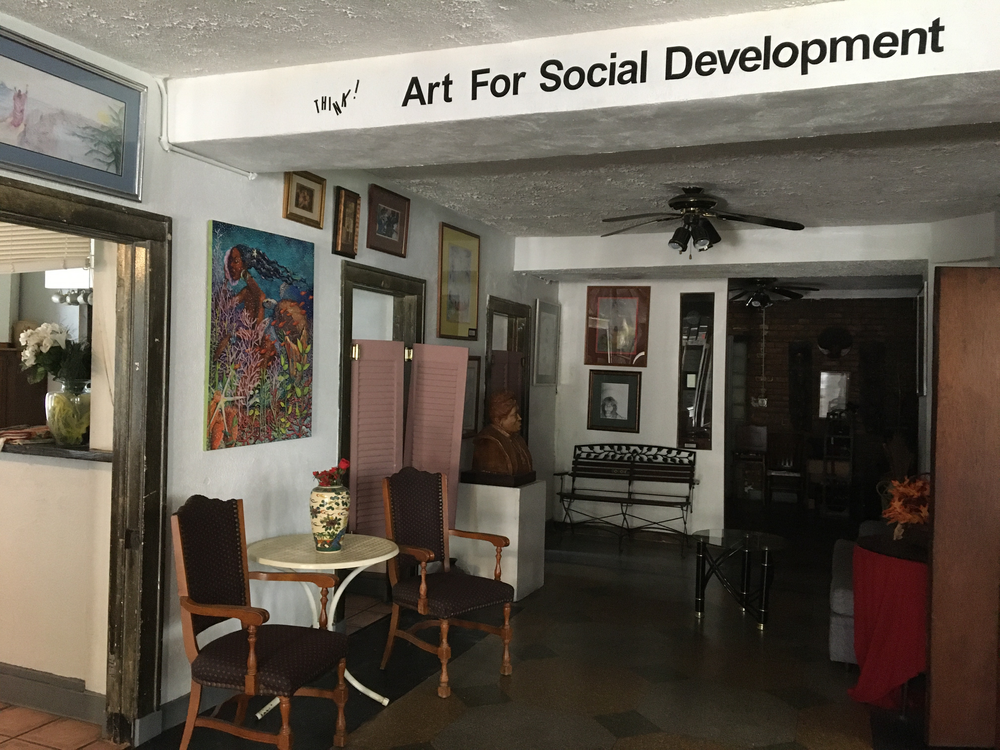
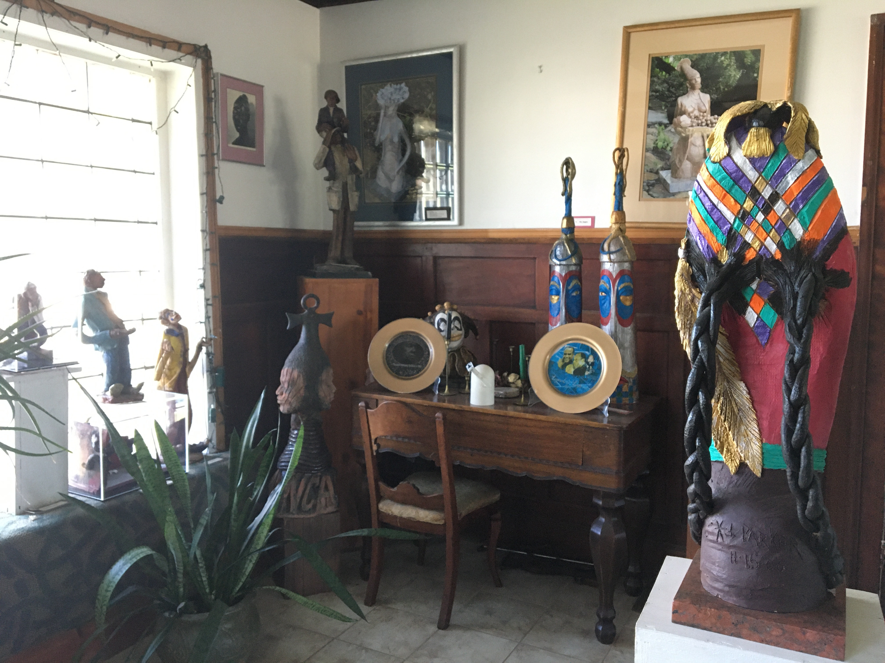
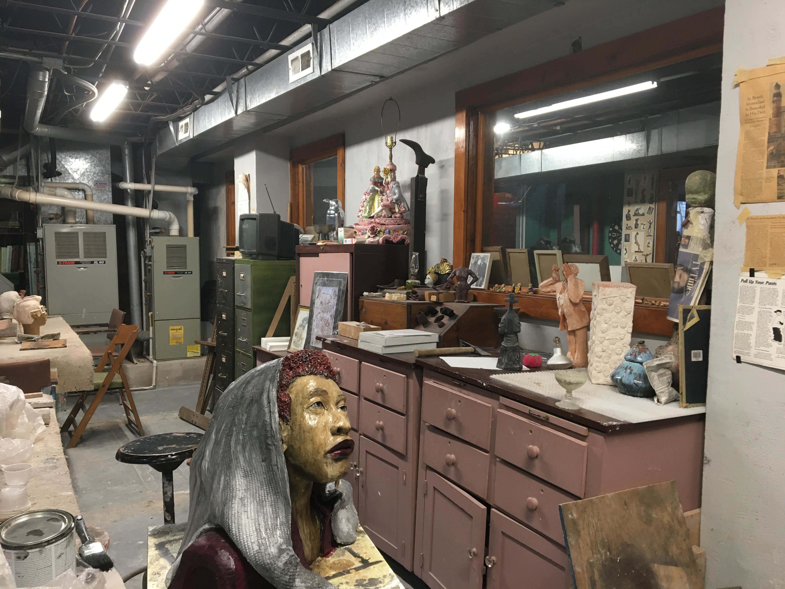
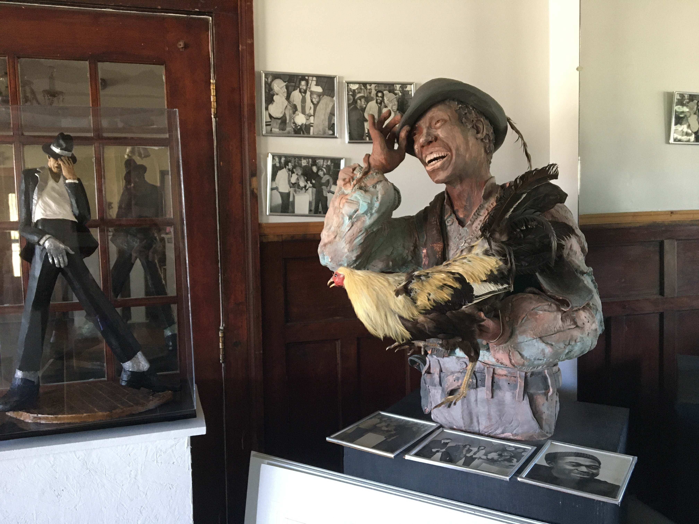

Edward E. Parker Museum of Art
Home to the collected works of Edward E. Parker, The African
Bookshelf & Gift Shop,
Parker's Guesthouse, the annual Collard Green Cook-Off & Arts
Festival, and more.
Museum Website
Photo Album
Oral History by Edward E. Parker
-
Artist, Educator, and Entrepreneur
LEILA: Would you like to start by talking about your artistic practice and your background in art?
ED: My background in art is many things. I started art in the fourth grade. I had difficulties with the three R’s: Reading, writing, and arithmetic. I had a teacher who thought I had a talent so she called my parents and asked if she could pay my way to the Toledo Museum of Art. So she did, and that was the start of my career. After the first year there, my parents took it up and started sending me every year, so I went to take classes at the Toledo Museum of Art, and started in the fourth grade and finished in the 8th or 9th grade. Toledo Museum of Art is the third wealthiest museum in the country; New York is first, Cleveland is second, Toledo is third, and I thought that was interesting. So my career started when I was in the fourth grade and ended when I was in ninth grade, going to art school every Saturday morning.
I was also a professor at the Western Campus of Cuyahoga Community College, I ran the sculpture and ceramics department. I was there a long time. It was a nice experience. I taught sculpture, ceramics, design, drawing. During that time I taught a little bit of everything because I knew the cut back was coming and I wanted to be able to teach things other than sculpture and ceramics.
-
Breathing Life into a Historic Building
-

Edward's multi-use event space, located on the ground-floor of the building.
ED: I guess I was at the Western Campus fifteen or twenty years. During that time I started making plans to retire, and I bought this building for my retirement years. This building had sat empty for twenty years, and it took a crazy young artist to come and redo it. I remember when I first started working on it, my friend had said ‘that building is going to kill him,’ and that’s what I was praying for, just don’t let me die in the building. I tried to borrow money, wouldn’t nobody let me borrow money, no bank. And now they trying to throw me down and make me take money. So all praises go to the heavenly father, God.
The front of the building used to be the East Cleveland Clinic that worked in conjunction with Huron Road Hospital, and it was designed for the wealthy alcoholics. Downstairs in my workspace you can see room spaces that have a call light above. And since I’ve been in here I’ve had various people come back, people that used to work here when it was the Clinic. There’s information on when it first became empty—as the saying goes, the gentleman who ran the clinic fell in love with somebody else and ran away with the new girlfriend. His wife tried to take it over, but couldn’t manage it. When they moved out, people tried to make it work but couldn’t. It was a church at one time, some minister just walked in off the street and set up his practice in here, but he couldn’t make it work. I talked to him years ago. I’ve had people come back who had family that worked here before it became a nursing home, whose families were buried down the street in Lakeview Cemetery.
-
Art for Social Development
-

Edward's collection of sculptures displayed in the ground-floor gallery.
-

A section of Edward's studio space, also used as a classroom to the communtiy,
with an in-progress sculpture honoring Aretha Franklin.
ED: It’s hard work, but it’s working. And this pandemic has put a halt to a lot of things, but I still have students come here. I give free classes on Tuesdays and Thursdays to senior citizens. So this building evolved from day one. I’ve had three apartments in here for rent, my studio is in the lower level, we have a hair salon here, we have a bookstore here, and we have my art museum here. So I’m just excited. I might not act like it, but I really am [laughs].
This past summer, we had a lady rent it out for SOS—Strengthening Our Students—she hired a guy to teach young kids to make comic books. People gave me money to do art classes for grandparents and grandkids, that went well. We had an art exhibit for that. The list goes on and on. Cleveland Foundation gave me the money to do the intergenerational art class.
LEILA: And you still make time to produce art of your own, too.
ED: Absolutely, that’s what it was designed for! For when I retire. To be able to come over in distant times and create till tomorrow’s end. That’s what I wanna do. [QUOTE 8:45] I wrote that when I was flying back from Africa. I was fortunate enough to study in Africa, and it was a mind-blowing experience. I studied in the Western countries, for the longest period of time. Nigeria; Lagos, Abeokuta, Ife, those places.
LEILA: What's the story behind this quote written on the wall? [It reads: Art For Social Development]
ED: In a lot of cultures, art comes first. That’s what
we have to start thinking about here. Put art first, and we won’t a
problem. And that’s what I had in mind when I did that.
That’s been about ten-fifteen years now. Which again, is doing extremely well. I’ve had people from all over the world; Japan, China, Africa, you may have heard of Parade the Circle? Behind the Museum, in that space next to the bed and breakfast, they would rent that space for their float-making. Most of them were from Africa. It was a fantastic experience, there were about ten of them, and everyday they woke up singing, working, carving, go over there and do their floats for the Parade the Circle. I’ve been fortunate enough to have some communication with the Cleveland Museum of Art, I’ve had the director here looking to see what I was doing, which I was extremely proud of. I tried to get ‘em to buy my Chicken George. We need some place for Chicken George, some prominent place.
-

Edward's lifesize ceramic sculpture of Chicken George, a character from Alex Haley's
seminal 1976 novel, Roots: The Saga of an American Family.
Chicken George was written by Alex Haley for his Roots series. I am a theme artist and that was a theme of mine during that period of time. Chicken George started it all, I mean he made a living through fighting his chickens. So Alex Haley, who was a writer who did the story of Chicken George—incidentally though one of the ladies who wrote the play was from Cleveland. I had a chance to speak to Alex Haley, him and Norman Leer, they were gonna use my work in the program, but he passed. You gotta be lucky, timely, to become successful in this business.
In my short life, I’ve done over 3,000 pieces. I’ve got artwork all over everywhere. Thank God. I’ve had all kinds of meetings here. We’ve done jazz in here, we’ve had parties in here, we’ve had weddings in here. We had our annual Collard Green Cook-Off & Arts Festival. This was the first year we didn’t do the Collard Greens Fest. We give money to who cooks the best collard greens—first, second, and third place prizes. I used to win, by the way, and then they said it was not fair [laughs]. I had outside judges come in and judge. I give away a $500 art scholarship to a budding art student. This would have been the 15th year, but the pandemic slowed all that down. But we’re gonna get through this also. I don’t know when. But we will get through this.
LEILA: Is there anything else you’d like to add?
ED: Yes. We gotta get rid of that current president! And people should come by here and see what’s happening, because they’ll be amazed to see how this building has transformed from an eyesore to a nice thing. Everyone has an invitation to come and see what we do here.
• • •